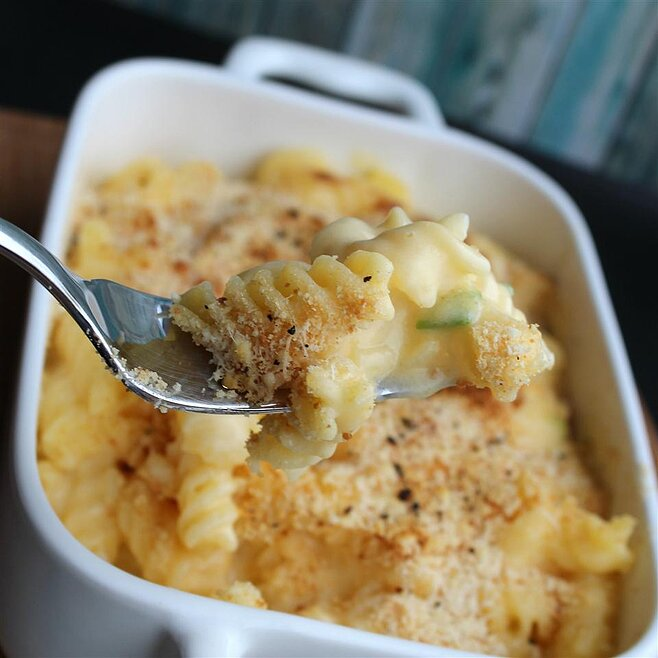

Gluten-Free Mac-n-Cheese

Back to Main
Description
Mascarpone makes this cheesy pasta
extra creamy, and the addition of
potato starch means the sauce thickens
without flour.
Ingredients (recipe yields 6 servings)
- 12 ounces gluten-free pasta (such as Barilla)
- 6 tablespoons butter
- ½ onion, chopped
- ¼ cup potato starch
- 1 (12 fluid ounce) can evaporated milk
- 2 cups shredded Cheddar cheese
- ⅓ cup mascarpone cheese/li>
- 3 dashes hot sauce (such as Tabasco) (Optional)
Steps
-
Bring a large pot of lightly salted water
to a boil. Cook pasta in the boiling water,
stirring occasionally until tender yet firm
to the bite, about 7 minutes. Drain and
reserve 1/2 cup cooking liquid. Transfer
pasta to a serving bowl.
-
Melt butter in a saucepan over medium heat;
add onion and cook until translucent,
about 3 minutes. Stir potato starch into
onion mixture until dissolved, about
1 minute. Slowly pour evaporated milk into
onion mixture and stir constantly.
Bring sauce to a simmer and remove saucepan
from heat.
-
Stir Cheddar cheese, mascarpone cheese,
and hot sauce into sauce until smooth,
adding the reserved pasta cooking liquid
if needed to thin the sauce. The cheese
sauce should be the consistency of gravy.
-
Mix cheese sauce into pasta and
serve while warm and gooey.